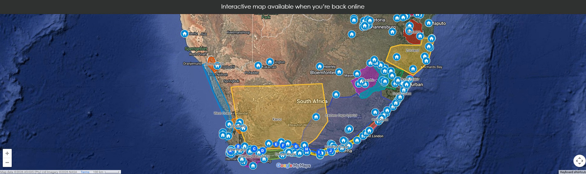

We list ALL the hostels in South Africa! Click the icons for info.

PAGE UNAVAILABLE
You're off the map! Even the best explorers get lost sometimes. The page you're looking for has moved, or perhaps it's been eaten by a lion. Try one of the pages in the menu above.
This guide uses cookies to improve your experience and keep it free. Read our Cookie Policy.